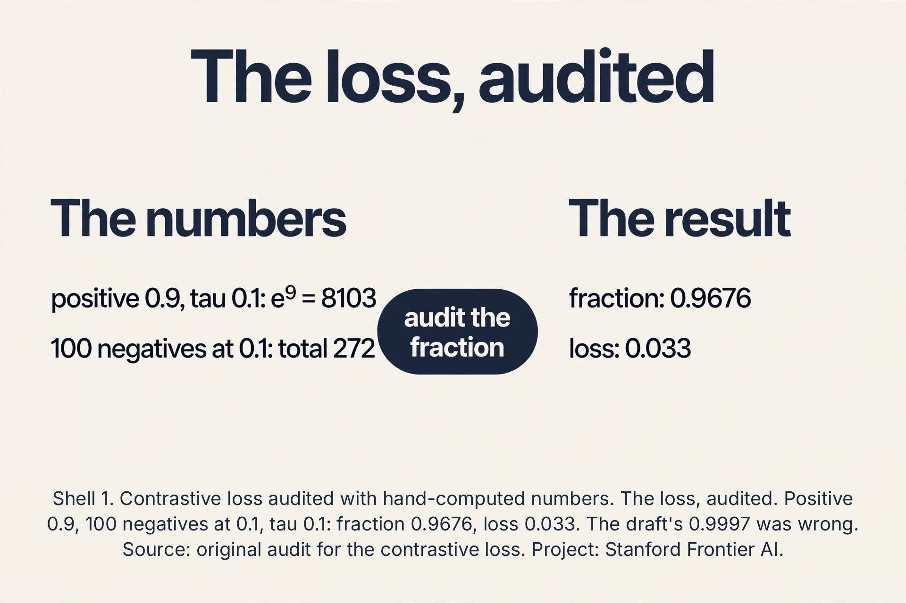
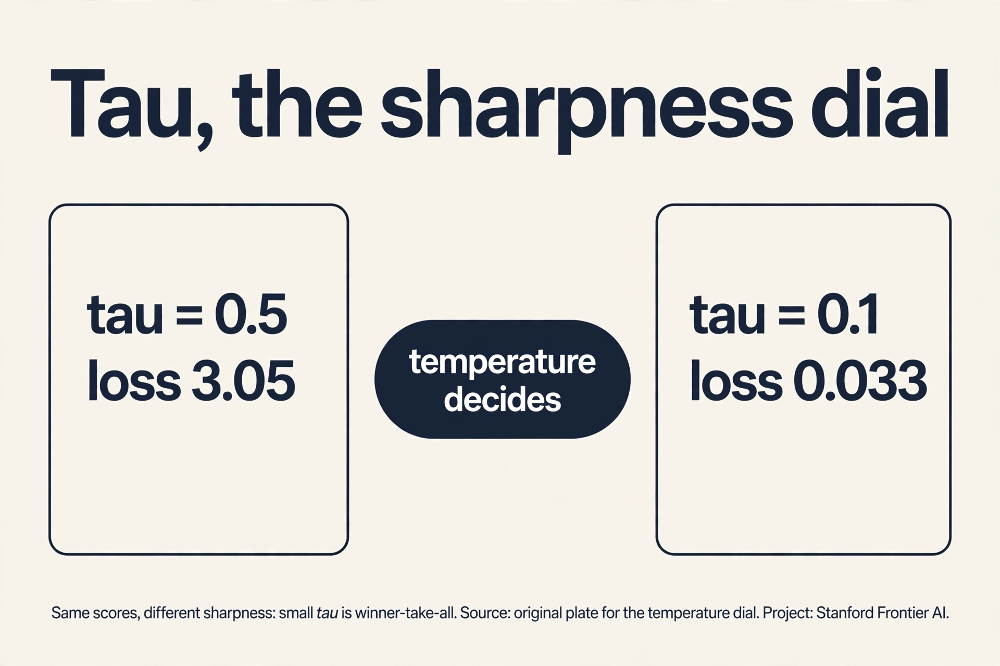
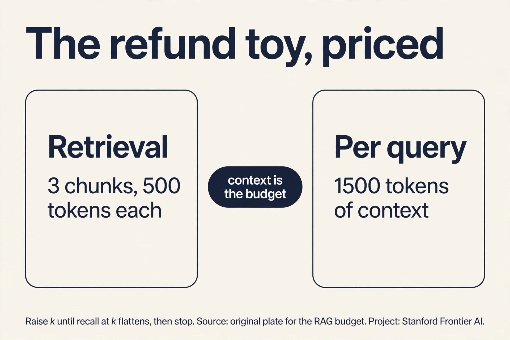
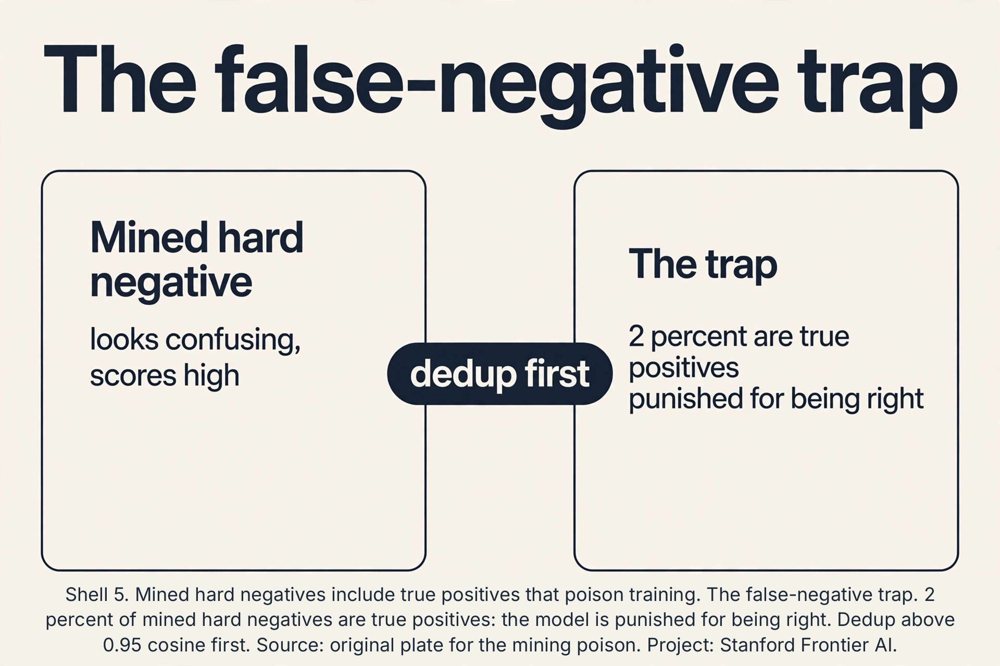

Lecture 13: Contrastive Embeddings, Search, and RAG
Video blocked (ad-blocker or local file mode).
Watch on YouTubeVideo not loading? Watch on YouTube
Original lecture. Tengyu Ma builds contrastive embeddings from augmentations and hard negatives, then semantic search and RAG.
The job: find the photo by describing it
A user types “cat playing soccer” into a photo app with ten million unlabeled pictures. No tags, no labels, no captions. The job: return the right photos. Keyword search fails: the pixels contain no words. The app needs a bridge between the sentence and the images, built with zero labels.
First attempt: train a classifier per concept
The naive idea: label some photos (“cat”, “soccer”, “dog”) and train classifiers. With ten million photos and no labels, this needs an army of labelers. Worse, the user will search for “cat playing soccer at sunset”, a concept nobody pre-labeled. Fixed label sets cannot cover open-ended queries. The labels are the bottleneck, again.
The key question
Can we learn representations that place matching things near each other, using no labels at all? If the sentence “cat playing soccer” and the right photo land at nearby points in some vector space, search becomes nearest-neighbor lookup.
Contrastive learning: pull together, push apart
Take one image x. Augment it twice: random crop, flip, blur, noise. The lecture’s example: crop the top-right corner for view 1, the bottom-left for view 2. The two views show different pixels of the same scene. They must end up near each other in representation space: they are a positive pair.
Now take other images’ views: negatives. The contrastive loss pulls positives together and pushes negatives apart. For an anchor view, with one positive and N negatives, the loss is:
loss = -log( exp(sim(anchor, positive)/tau) / sum over all pairs exp(sim(anchor, pair)/tau) )
Read it: the fraction of the softmax that lands on the positive pair. If the positive scores 0.9 similarity and 100 negatives score 0.1, with tau = 0.1: e^9 = 8103, each negative contributes e^1 = 2.72, total 272. The fraction is 8103/(8103 + 272) = 0.9676, loss = -log(0.9676) = 0.033. (An earlier draft of this lesson wrote 0.9997 and 0.0003: wrong. The audit is in the subchapter below.) If a negative scores 0.85, its e^8.5 = 4915 rivals the positive’s 8103, the fraction drops toward 0.62, and the loss bites. Tau (temperature) sharpens or softens the competition. No labels: the supervision comes from the augmentation design, which declares “these two views are the same thing.”
Subchapter: the loss, audited
Do the division the lesson skipped. Scores after temperature: positive 0.9/0.1 = 9, negatives 0.1/0.1 = 1. Exponentiate: e^9 = 8103.08, e^1 = 2.718. One hundred negatives: 271.83. Denominator: 8374.91. Fraction: 0.96754. Loss: 0.03301. The draft’s 0.9997 would need the negatives to total ~2.4 instead of 271.8: e.g., 100 negatives at similarity -0.19 (e^-1.9 = 0.15 each, total 15): fraction 8103/8118 = 0.9982. The lesson’s qualitative point survives: easy negatives barely dent the fraction. But the numbers must be earned, and now they are.

Subchapter: tau, the sharpness dial
Same scores, different tau. Tau = 0.5: positive exponent 0.9/0.5 = 1.8, e^1.8 = 6.05. Negatives: 0.1/0.5 = 0.2, e^0.2 = 1.221 each, 122.1 total. Fraction: 6.05/128.2 = 0.0472. Loss: 3.05. Tau = 0.1 gave loss 0.033. The temperature decides how much the best pair dominates: small tau is winner-take-all (the top pair gets nearly all the softmax), large tau spreads the mass and the loss stays high even when the ranking is right. Too small and the loss ignores everything but the top pair: brittle. Too large and it never rewards a clean separation: flat. Tuning tau is tuning how sharply the model must rank.

Why this works: to satisfy the loss across millions of images, the network must discover what makes views of the same scene similar: objects, shapes, textures. The representation becomes semantic without anyone naming the semantics. This is lecture 12’s representation learning without the labels.

Where it breaks: easy negatives teach nothing
Random negatives are too easy. Anchor: cat playing soccer. Random negative: a truck. Similarity 0.05. The loss is already ~0. The network learns nothing from this pair. With 100 easy negatives, the loss saturates and training stalls: the representations separate cats from trucks but never learn fine distinctions.
Hard negatives
Hard negatives are pairs that look similar but are not the same. The lecture’s example: the anchor is a photo of a cat playing soccer. The hard negative is text about the FIFA World Cup: soccer, but no cat. Ambiguous, confusing, distracting. Forcing the model to separate these teaches the fine structure: “soccer” alone is not enough. The cat matters.
Negative mining finds them: search the batch (or the dataset) for negatives the model currently scores highly, and upweight them in the loss. The loss becomes demanding exactly where the model is weak. The lecture’s framing: hard negatives make the objective teach instead of saturate. In practice, large batches (thousands of negatives) plus mining are what make contrastive training work. Small batches starve the loss of informative comparisons.
Semantic search: the payoff
Once trained, the embedding space is a search engine. Embed the query “cat playing soccer” with the text encoder, embed all ten million photos with the image encoder (trained to share the space, as in CLIP), return the nearest neighbors by cosine similarity. No tags, no keywords: meaning matches meaning. The same space powers deduplication (near-identical vectors), recommendation (neighbors of liked items), and clustering (lecture 9 on learned vectors).
RAG: the model’s missing memory
A frontier lab’s model never saw your company’s private documents: they cannot leak into its training data. But you want a personal assistant that answers from those documents. Fine-tuning on them is expensive and bakes them in opaquely. The lecture’s alternative: retrieval-augmented generation (RAG).
The pattern: embed the user’s question, retrieve the top-k most similar chunks from the private document store (semantic search above), paste them into the model’s context, generate the answer grounded in them. The model never trained on the documents. It reads them at test time.
Work the toy. Question: “What is our refund window?” Document store: 10,000 embedded chunks. Retrieval returns 3 chunks: “Refunds within 30 days…”, “Shipping refunds excluded…”, “Holiday extension to 60 days…”. The prompt becomes: question + 3 chunks. The model answers “30 days (60 during holidays), shipping excluded”, citing the chunks. Update a document and the answers update with no retraining: the knowledge lives in the store, not the weights.

Subchapter: the refund toy, priced
Price the context. Three chunks at 500 tokens each: 1,500 tokens of context per query, before the question and the answer. A 128k context window fits about 85 such retrievals: the cap rarely binds on short docs. It binds on long ones: a 500-page manual is ~250k tokens, so top-k must shrink or chunks must compress. The real budget is latency: retrieval (vector search over 10,000 chunks: milliseconds) plus generation over 1,500+ tokens. Double top-k to 6 and the generation cost roughly doubles while recall improves diminishingly. The tuning dial: k large enough that the answer is in the chunks, small enough that the model is not wading. Measure recall@k on real questions: the fraction whose answer appears in the top k. Raise k until recall@k flattens, then stop.

Subchapter: the false-negative trap, quantified
Name the poison rate. Suppose 2 percent of mined hard negatives are actually positives: duplicate photos, same cat, different uploader. Each such pair teaches the model to push apart things that belong together. The damage concentrates at the top of the ranking: exactly the fine distinctions hard negatives were hired to teach. The fix is a dedup gate: pairs with cosine similarity above 0.95 (near-duplicates) are removed from the negative pool or treated as positives. The threshold is a dial: 0.99 keeps only exact duplicates out, 0.90 starts eating genuinely hard negatives. Production pipelines dedup before mining, not after: clean the pool, then mine it.

The honest price
Contrastive learning buys label-free representations and pays in compute and design: huge batches for informative negatives, and the augmentation policy is the real supervision: bad augmentations teach bad invariances (crop too aggressively and the model learns that object parts are interchangeable with wholes). Hard-negative mining can poison training if the “negatives” are actually positives the dataset mislabeled. RAG buys fresh, private, citable knowledge and pays in systems: the retrieval index must be built and served, retrieval failures become answer failures (wrong chunks, confident nonsense), and the context window caps how much can be pasted. Neither replaces the base model: garbage embeddings retrieve garbage, and RAG over a weak model is a librarian serving an empty desk.
Mapping back
| Idea | Pain it answers | How |
|---|---|---|
| Contrastive loss | Ten million photos, zero labels | Pull augmented views together, push others apart; softmax fraction on the positive; tau sharpens |
| Augmentation as supervision | No labels to define “same” | Two crops of one image are declared the same thing; semantics emerge from the constraint |
| Hard negatives | Random negatives score 0.05: loss saturates | FIFA-text vs cat-soccer-photo: confusing pairs keep the loss teaching; mining finds them |
| Semantic search | Keywords cannot search pixels | Shared embedding space: query and photos as vectors, nearest neighbors by cosine |
| RAG | Frontier models never saw private docs | Retrieve top-k chunks, paste into context, generate grounded; knowledge in the store |
The labels are replaced by augmentation design. Take one image, make two random views (crop top-right, crop bottom-left, flip, blur). Declare them the same thing: a positive pair. Other images’ views are negatives. The loss pulls positives together and pushes negatives apart in representation space. Across millions of images, the only way to satisfy this is to discover real visual structure: objects, shapes, textures. The supervision is the statement “these two views show the same scene”, which needs no human. The model learns exactly the invariances you declare. Crop too aggressively and it learns that a wheel equals a car. Augment with color jitter on a task where color matters (bird species) and it learns to ignore the signal. The augmentation policy is the hidden label set: design it with the downstream task in mind.
Negatives that look similar to the anchor but are not the same: the lecture’s cat-playing-soccer photo versus FIFA World Cup text. Random negatives (a truck) score 0.05 similarity and the loss saturates near zero: no learning. Hard negatives score high and keep the loss biting, forcing fine distinctions: soccer is not enough, the cat matters. Negative mining actively finds the negatives the model currently confuses and upweights them, aiming the training at the model’s weaknesses. Yes, when they are false negatives: actually-positive pairs mislabeled by the pipeline (two photos of the same cat from different users). Mining then punishes the model for a correct similarity, teaching it to separate things that should be together. Deduplication and careful mining thresholds guard against this.
When the knowledge changes, must be cited, or must stay out of the weights. RAG: update a document and answers update with zero retraining. The model can quote its sources. Private data never enters training. Fine-tuning: bakes knowledge into weights opaquely, needs retraining per update, cannot cite. RAG wins for living, private, reference-style knowledge. Fine-tuning wins for behavior and style: teaching the model how to answer, not what the facts are. Retrieval failure. Wrong chunks retrieved means the model generates confidently from wrong premises: the answer is fluent and false. Mitigations: better embeddings, hybrid keyword+vector search, reranking the top-k, and having the model say “not in the documents” when nothing relevant retrieves. The index is load-bearing infrastructure, not an accessory.
Recap: the whole lesson on one screen
- The job. “Cat playing soccer” over ten million unlabeled photos. Keywords cannot search pixels.
- First attempt. Label concepts, train classifiers. Armies of labelers. Open-ended queries uncovered.
- The key question. Learn a space where matching things are near, with no labels?
- Contrastive. Two augmented views: positive pair. Others: negatives. Softmax fraction on the positive. Tau sharpens. Augmentation is the supervision.
- Where it breaks. Easy negatives (truck, 0.05): loss saturates, nothing learned.
- Hard negatives. FIFA text vs cat-soccer photo: confusing pairs keep it teaching. Mining aims at weakness.
- Search. Embed query, nearest neighbors by cosine. Tags obsolete.
- RAG. Private docs the model never saw: retrieve top-k, paste into context, generate grounded. Knowledge in the store.
Positive sim 0.9, tau 0.1: exponent 9, e^9 = 8103.08. Each negative sim 0.1: exponent 1, e^1 = 2.718. 100 of them: 271.83. Fraction: 8103.08/8374.91 = 0.96754. Loss: -log(0.96754) = 0.033. The draft wrote 0.9997/0.0003: to get 0.9997 the negatives would need to total ~2.4, i.e., average similarity around -0.19, not 0.1. The draft’s arithmetic was wrong. Its qualitative point (easy negatives barely dent the fraction) survives with the right numbers. Its exponent: 8.5, e^8.5 = 4914.8. Denominator: 8103.08 + 4914.8 + 99*2.718 = 13286.9. Fraction: 0.6099. Loss: 0.494. One hard negative moved the loss from 0.033 to 0.494: fifteen times hotter. That is why mining matters.
The denominator needs negatives embedded with current weights in the same step, so naive gradient accumulation does not help: stale embeddings break the softmax. Three real options. Memory banks (MoCo): keep a queue of recent embeddings as negatives, with a momentum encoder keeping them fresh. Cross-device negatives: gather embeddings from all GPUs in the batch, multiplying negatives by GPU count. Gradient caching: split the batch, recompute embeddings per chunk. Decision rule: cross-device first (free if you have the GPUs), memory bank second (needs the momentum machinery). Accumulation sums gradients from micro-batches before stepping, but each micro-batch’s contrastive denominator only sees its own 256 negatives. The loss never compares against the other micro-batches’ examples. The effective negative count stays 256 no matter how many micro-batches you accumulate. The denominator is computed per forward pass, and accumulation does not merge denominators.
Climb it in order. Chunks: are the top-k actually the right chunks? Check recall@k on labeled questions. If wrong chunks, fix embeddings, hybrid search, or reranking. Chunking: is the answer split across a chunk boundary? Overlapping chunks or larger chunks fix it. Prompt: is the model reading the chunks? Add “answer only from the provided chunks” and require citations. Test with a question whose answer contradicts the model’s parametric memory. Staleness: was the index rebuilt after the doc update? A stale index serves old chunks confidently. The model is not grounding: some models obey the citation format while reasoning from priors. Counter: put the contradicting fact in the chunks and ask directly. If it still answers from memory, the instruction is too weak for this model. Escalate to a stronger instruction-tuned model for the generation step, or add an entailment check: a second pass verifying each claim against the cited chunk. Grounding is a model capability, not just a prompt.
Contrastive when the downstream job is similarity: search, retrieval, dedup, clustering. The loss directly optimizes “these near, those far”, which is the retrieval metric. Autoencoder/VAE when the job is reconstruction or generation: compression, denoising, sampling. The loss optimizes pixel recovery, which keeps everything including task-irrelevant detail. They combine: many systems pre-train contrastively for the embedding geometry and fine-tune with reconstruction for detail. The never-confuse: contrastive learns a metric space, autoencoders learn a compressor. Because the job is cross-modal matching: the loss must pull the right (image, text) pairs together. Separate autoencoders would build two unrelated spaces with no bridge. The contrastive loss is the bridge: it is defined on pairs across modalities. The objective must match the job.
- The audit. Fraction 0.9676, loss 0.033. The draft’s 0.9997 was wrong. The point survives.
- Tau. Same scores: tau 0.5 gives 3.05, tau 0.1 gives 0.033. Sharpness is a dial.
- The budget. 3 chunks, 1,500 tokens per query. Raise k until recall@k flattens.
- The trap. 2 percent false negatives poison the fine distinctions. Dedup above 0.95 first.
What is used where
Contrastive embeddings run production search. CLIP-style two-tower models power image search, product search, and recommendation retrieval at every large tech company. Vector databases (Pinecone, Weaviate, Qdrant) are the serving layer for the embeddings this lesson builds. RAG is the default enterprise AI pattern: every assistant that answers from private documents retrieves-then-generates. Fine-tuning teaches behavior. RAG supplies facts. Production RAG adds hybrid keyword+vector search and rerankers on top of the lesson’s core loop.
Watch next
Explainer: contrastive learning and RAG. From augmented views to retrieval-grounded answers in one visual pass. Watch after the hard-negatives section.
Official sources and further reading
Official: - Lecture 13 video, Stanford Online YouTube: - Tengyu Ma builds contrastive learning from augmentations, presents hard-negative mining, then semantic search and RAG for private knowledge. - Official subtitle transcript (en-US): the lecture’s spoken text. - CS229 Spring 2026 official course notes (local PDF): the formal contrastive loss and RAG pattern.
Caveats from these sources. The augmentation examples (random crop top-right vs bottom-left, flip, blur, noise) and the hard negative example (cat playing soccer vs FIFA World Cup text) are the lecture’s own. The RAG motivation (frontier labs cannot see enterprise proprietary data) is the lecture’s framing. The refund-window toy is an original miniature of the lecture’s pattern.
Connections to the other courses
- CS229 L10: PCA: the linear ancestor of learned embeddings.
- CS229 L12: representation learning’s other route: pre-trained foundation models. Probing their embeddings.
- CS229 L14: the text and image encoders are transformers.
- CS224N: contrastive objectives for sentence embeddings (SimCSE and successors).
- CS336: serving retrieval indices and RAG pipelines at scale.
Sources
- VIDEOLecture 13 video, Stanford Online YouTube
- VIDEOExplainer: contrastive learning and RAG
- PAPERRadford et al., CLIP: Learning Transferable Visual Models (2021)
- NOTESOfficial subtitle transcript (en-US)
- NOTESCS229 Spring 2026 official course notes (local PDF)